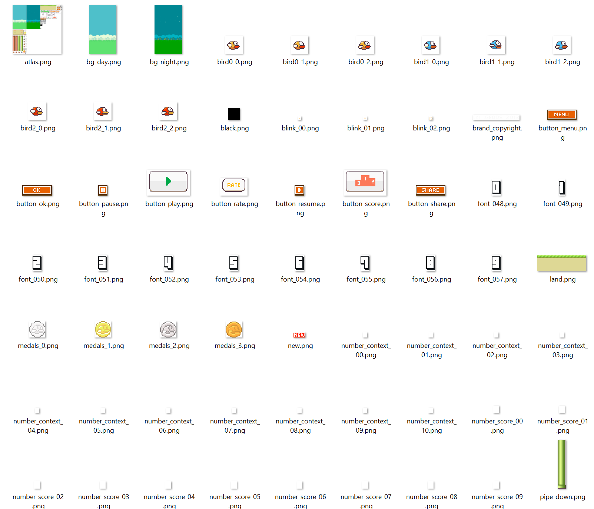
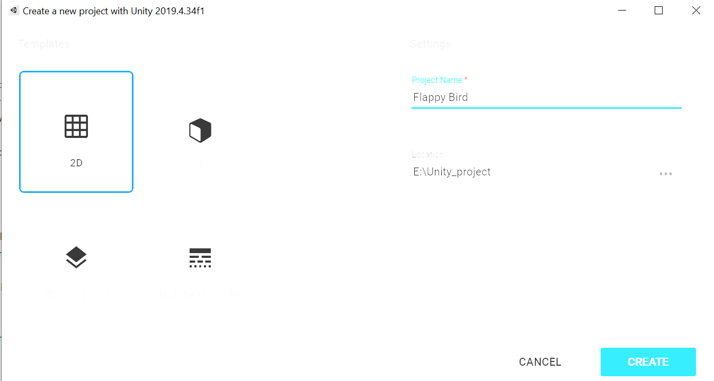
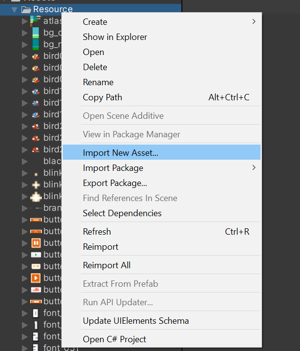
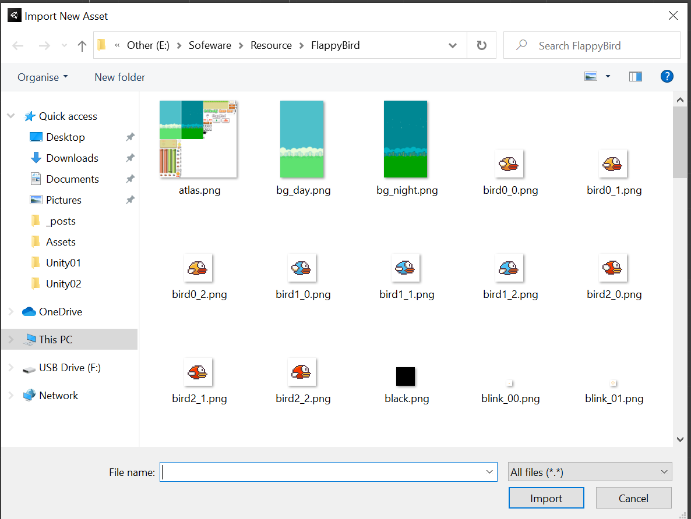
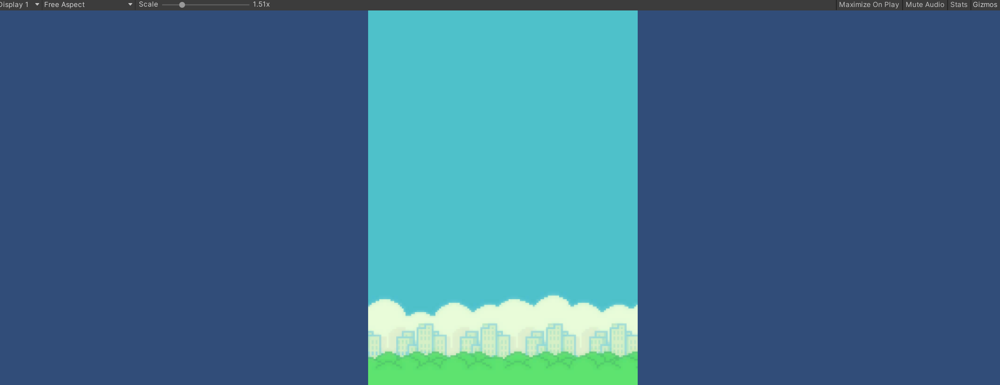
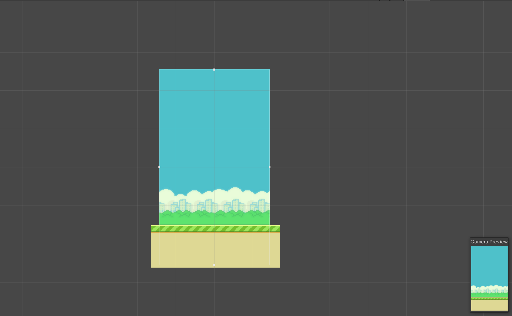
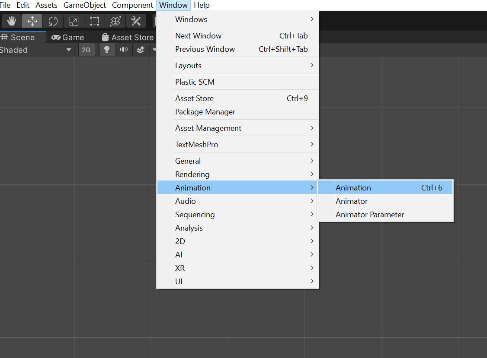

前面介绍了Unity的界面和组件，今天就用这些来制作一款简单的游戏来加深对Unity的认识。
一、Flappy Bird
Flappy Bird曾是一款风靡全世界的手机游戏，据传其作者开发这款游戏只用了3天，于2013年发布，已发布就成为年度最热门的免费游戏，至今此游戏的下载次数以超过5000万次。今天就使用Unity对这款游戏进行重制。
二、准备工作
首先，从网上下载Flappy Bird的游戏素材，相关素材我会稍后给出。

接着打开Unity，新建一个名为Flappy Bird的2D工程，并设置工程的保存路径

点击Create后进入Unity，然后在Project视图会自动生成Assets和Packages两个文件夹，右键Assets文件夹，选择Create — Folder，将新建的文件夹重命名为Resource。然后右键Resource文件夹 — Import New Asset，在弹出的界面里找到放素材的文件夹，ctrl+a全选，然后点击Import。准备工作就做完了


三、制作游戏场景
在Assets文件夹下有一个Scenes文件夹，在这里Unity会自动生成一个场景。Flappy Bird的游戏原理非常简单，这里使用一个场景就够了。在Resource文件夹我们可以看到之前我们导入Unity的图像素材，这里我们先制作背景，将bg_day拖入Scene视图或Hierarchy视图中，然后在Game视图中会发现背景没有铺满屏幕，这时我们要调节屏幕的比例。

点击Free Aspect，选择9：16的比例，没有这个比例可以点击最下面的+号自己设置。设置好屏幕分辨率后，调整Camera的大小来切合背景，在Hierarchy视图里选择Main Camera，然后在Inspector视图里在Camera — size一栏，设置2.55左右。然后将land拖入Scene中，拖拽调整位置，最后得到这样的背景

接下来制作飞行的小鸟，我们利用Unity自带的动画制作工具Animation来制作。在Resource文件夹里shift+鼠标左键依次选择bird0_0–bird0_2，然后将其拖入Scene视图，此时会弹出一个窗口，给这个动画起名Bird，点击Save。会飞行的小鸟就做好了，然后可以在Animation视窗了调整动画效果

在Animation视窗里我们发现小鸟挥动翅膀极其鬼畜，因此我们调整下动画帧数，如下
制作完小鸟的动画，但是背景并不会随着小鸟挥动翅膀而前进，所以我们还需要制作一个脚本来使得背景”跟着”小鸟移动。
选中land，在Inspector中将Draw Mode设置为Tiled，这样对land进行拉伸时图像就会平铺。接下来使用左上角的Rect Tool(快捷键 T)，将land拉伸
然后我们编写一个脚本来控制地面移动。选中Hierarchy视窗里的land，在Inspector视窗，点击Add Component —- New Script，将脚本命名为LandMove。此时land的Inspector就多出了LandMove脚本组件，右键点击 — edit script，进入编辑界面。在编辑界面输入以下代码：
1 | public class LandMove : MonoBehaviour |
ctrl+s保存后返回Unity界面，你会发现LandMove脚本组件多了一栏Land，此时将Hierarchy视窗里的land拖入这栏，然后点击正上方的播放键就会的到以下效果：
这样就看起来自然多了。